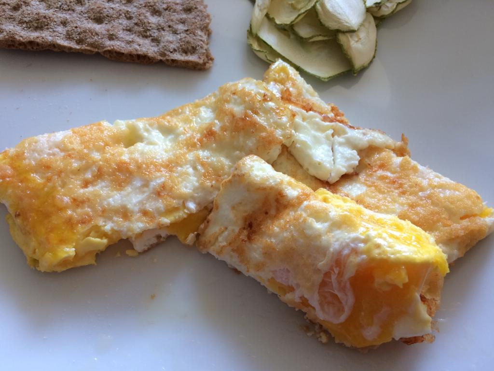

Huevos Volteados
A la chica le encantan los huevos fritos, pero no las amarillas blandas. Diseñé esta receta para ella. El sabor está entre huevos fritos, hervidos/pochados, y tortilla. Hay que leer al final para una versión más elaborada.

Ingredientes para una persona
- Dos huevos grandes
- Media cucharadita de mantequilla
- Sal y pimienta
Preparación
Calentar la sartén a fuego medio con la mantequilla. Cascar los huevos, y separar las amarillas enteras de las claras. Agregar las claras a la sartén caliente. Agregar las amarillas en el centro cuando las claras comiencen a blanquear. Salpimentar. Doblar en dos cuando las amarillas comiencen a cuajar. Voltear una vez. Cortar en dos o tres y servir.
Variación
Usar aceite de tocineta y colocar una capa de queso parmiggiano rallado antes de colocar las claras. Agregar las amarillas junto con unos trocitos de queso de cabra maduro (estilo brie).